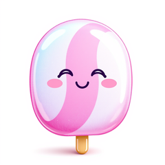

CandyCodeshot
Code → SVG/PNG screenshot generator

candy-codeshot turns code or terminal output into a screenshot. The default output is a plain-text SVG, which is diffable and fine for git and CI artifacts. PNG output goes through ext-gd. ANSI colour input is honoured: SGR foreground and background colours, in 16, 256 and 24-bit forms, plus bold, italic and underline, become per-segment <text> fills and <rect> background bands. It is a PHP port of the idea behind charmbracelet/freeze, reimplemented in PHP with its own flag spellings.
Install
composer require sugarcraft/candy-codeshot:dev-masterRequires PHP 8.3 or newer and ext-mbstring. The SVG path needs no raster extension, so there is no ext-gd or Imagick requirement there. PNG output needs ext-gd. The package requires its sugarcraft/ siblings at dev-master, so a project on the default stable minimum stability must add "minimum-stability": "dev" and "prefer-stable": true.
A rolling standalone phar is published as candy-codeshot.phar on the candy-codeshot/latest release. Run it through PHP, because a release download is not executable. Check the digest before the first run:
curl -LO https://github.com/detain/sugarcraft/releases/download/candy-codeshot/latest/candy-codeshot.phar
curl -LO https://github.com/detain/sugarcraft/releases/download/candy-codeshot/latest/candy-codeshot.phar.sha256
sha256sum -c candy-codeshot.phar.sha256
grep -m1 . candy-codeshot.phar.commit # which build you hold
php candy-codeshot.phar --versionA signed build also carries two signatures. candy-codeshot.phar.sha256.sig is a base64 libsodium detached signature over the .sha256 file's body. candy-codeshot.phar.minisig is the legacy raw-byte signature over the archive itself, with a .minisig.sha256 digest beside it. Neither is a minisign signature over the .sha256 body, so minisign -V against that file will not verify. An unsigned build has none of these files. The public half of the signing key is pinned in candy-code and candy-top, not in this app. Until an anchored public key ships for this app, treat the digest and the commit as a statement of what you hold, not a cryptographic attestation of who built it.
Quickstart
Pipe any text in, or name a file. The bare form writes SVG to stdout, and -o writes it to a file.
echo "function hello() { return 'world'; }" \
| candy-codeshot --theme dracula --line-numbers > out.svg
candy-codeshot input.php \
--theme tokyo-night --no-window --output screenshot.svg
candy-codeshot notes.md --format png -o notes.pngThe last line renders without syntax colour. The detector names notes.md as Markdown, the lexer has no Markdown grammar, and a name with no grammar renders plain. See language detection.
From PHP, the library is one fluent chain. Every with*() call returns a new renderer, so a configured renderer can be shared safely:
use SugarCraft\CodeShot\SvgRenderer;
$code = <<<'PHP'
<?php
echo "hello, world\n";
PHP;
$svg = SvgRenderer::dracula()
->withLineNumbers(true)
->withWindow(true)
->withPadding(24)
->withLigatures(true)
->render($code);
file_put_contents('out.svg', $svg);Concepts
A screenshot is three steps: parse the input into styled segments, lay them out on a grid, and paint the grid with window chrome. The parser reads SGR escape sequences and the highlighter reads source code. Layout and window geometry are pure functions of the segment list and the options. The renderers then emit text (SVG) or pixels (PNG).
Two renderers, one fluent surface
SvgRenderer and PngRenderer share the same setters: padding, window chrome, shadow, border, line numbers, the corner radius and the window style. The SVG-only setters are withLigatures(), withFont(), withHighlight() and withTitle(), and PNG has no counterpart for them. withBorderRadius() exists on both, but on PNG it is accepted and inert, because PNG corners stay square.
use SugarCraft\CodeShot\PngRenderer;
$png = PngRenderer::dracula()
->withLineNumbers(true)
->render($code); // requires ext-gdANSI input becomes styled text
ANSI input is parsed rather than stripped. SGR state carries across lines, so an unterminated colour keeps painting the following lines, as it would in a terminal. Colours are read in both spellings xterm allows: the flat 38;2;R;G;B and the grouped 38:2::R:G:B, for foreground and background alike. Both spellings resolve to the same #rrggbb.
Codes the renderers deliberately do not map are parsed and ignored. Those include reverse (7), hidden (8), strikethrough (9), dim (2), blink (5), rapid blink (6), double underline (21) and overlined (53). An out-of-range palette index, such as 38;5;N with N above 255, changes no colour, as in xterm.
$svg = SvgRenderer::dark()->render("\x1b[31merror:\x1b[0m something broke");
// With a background colour
$svg = SvgRenderer::dark()->render("\x1b[44m\x1b[37malert:\x1b[0m background highlight");Language detection
Syntax colour needs a language. The detector looks at the filename extension first, then the shebang, then content signatures. It reads at most the first 8 KB for signatures. Content over 1 MB is not inspected and is treated as plain text. A detected name with no grammar renders plain rather than failing. The lexer covers fifteen keyword grammars in pure PHP. Any other name still reaches the same code path and renders uncoloured.
The -t or --type flag forces a language and skips detection. The value is not validated, so an unknown name is harmless.
Themes and palettes
A Theme is a palette: the background, the chrome, the text and the token colours. Five themes ship built in, and the library also takes a theme from a VS Code theme file or a flat JSON palette. The highlighter reads the token colours from the theme, so swapping the theme changes both the frame and the syntax colours.
Tasks
Screenshot a source file for a README
candy-codeshot src/Greeter.php --theme nord --line-numbers -o docs/greeter.svgInput and output paths must resolve inside the working directory. Run the command from the project root, or pass --unsafe-paths to lift the rule on purpose.
Colour a terminal transcript
Pipe the output of a coloured program straight in. The SGR escapes become coloured text in the SVG, so the screenshot matches what the terminal showed.
phpunit --colors=always 2>&1 | candy-codeshot --window-style iterm --no-shadow -o run.svgLoad a theme from a file
A value that contains a path separator or ends in .json takes the file route. The file is confined like every other path and must parse as a theme. Both a VS Code theme and a flat palette are accepted.
candy-codeshot input.php --theme ./themes/brand.json -o brand.svguse SugarCraft\CodeShot\SvgRenderer;
use SugarCraft\CodeShot\Theme\FlatPaletteThemeLoader;
$theme = FlatPaletteThemeLoader::load('themes/brand.json');
$svg = SvgRenderer::dark()->withTheme($theme)->render($code);Highlight a range of lines
--highlight start:end[:colour] band-highlights the lines in an inclusive range. The range is checked at parse time, whatever the output format. start must be at least 1, and end must not be below start. The highlight is drawn in SVG only.
candy-codeshot src/Bug.php --highlight 12:14:#ffd33d -o bug.svgEmbed a font in the SVG
--font embeds a TTF, OTF, WOFF or WOFF2 file as base64, so the screenshot keeps its typeface when it is viewed away from the machine. The CLI checks the file's signature and refuses anything else with exit 2. The library's withFont() only checks that the file exists.
candy-codeshot input.php --font fonts/FiraCode-Regular.woff2 -o embedded.svgWrite a PNG
PNG renders through the GD bitmap fonts, so theme font sizes and embedded fonts do not apply. Give it an output file. Writing PNG bytes to an interactive terminal is refused.
candy-codeshot script.php --theme dracula --format png -o shot.pngBuild screenshots from a script
The library does no I/O of its own. render() returns the full bytes, and the caller writes them. StringOutputWriter and FileOutputWriter exist for code that streams chunks, and the CLI does not use them.
use SugarCraft\CodeShot\StringOutputWriter;
$writer = new StringOutputWriter();
$writer->write(SvgRenderer::nord()->render($code));
$writer->flush();
$svg = $writer->result();API reference
The public surface is the renderers, the theme and its loaders, the highlighter and detector, and the output helpers. The parser and the SGR classes are public for callers that want the segments themselves.
| Class | Method | Description |
|---|---|---|
| SvgRenderer | dark(), light(), dracula(), tokyoNight(), nord() | Create a renderer with a built-in theme. |
| SvgRenderer | withLineNumbers(bool), withWindow(bool), withShadow(bool), withBorder(bool) | Toggle the line counter, the window chrome, the drop shadow and the frame outline. |
| SvgRenderer | withPadding(int), withBorderRadius(int) | Set the padding and the corner radius. The padding is clamped to 0 to 4096, and the radius to 0 to 256. The CLI refuses a radius above 64. |
| SvgRenderer | withWindowStyle(WindowStyle|string) | Chrome style: macos, windows-terminal, iterm, hyper or none. |
| SvgRenderer | withLigatures(bool) | Sets font-variant-ligatures to normal. |
| SvgRenderer | withFont(?string) | Embeds a TTF, OTF, WOFF or WOFF2 file. The library checks that the file exists. The CLI also checks the signature. |
| SvgRenderer | withHighlight(int, int, ?string) | Band-highlights lines start to end, inclusive. SVG only. |
| SvgRenderer | withTitle(string) | Sets the document's accessible name through a child <title>. It is not a visible caption. |
| SvgRenderer | withTheme(Theme), render(string) | Swap the whole palette, then render the code or ANSI text to an SVG string. |
| PngRenderer | dark(), light(), dracula(), tokyoNight(), nord(), render(string) | The GD raster sibling with the same fluent setters, minus the four SVG-only ones. Requires ext-gd. |
| Theme | dark(), light(), dracula(), tokyoNight(), nord(), new Theme(...) | Built-in palettes, or a custom palette through the constructor. |
| VsCodeThemeLoader, FlatPaletteThemeLoader | load(path), fromArray(data) | Build a Theme from a VS Code theme file or a flat JSON palette. load() reads a file, and fromArray() takes decoded data. |
| CodeHighlighter | forTheme(Theme), highlight(code, language) | Turn source code into ANSI-styled tokens using the theme's palette. An unknown language returns the input unchanged. |
| LanguageDetector | detect(content), detectFromFilename(name) | Detect a language from content (shebang, then signatures, reading at most 8 KB), or from the filename extension. |
| AnsiParser | parse(line, ?SgrState &$carry), xterm256ToHex(int) | Parse one line of ANSI text into segments, carrying SGR state across lines. The hex helper refuses an index outside 0 to 255 with InvalidArgumentException. |
| SgrStateHandler | csiDispatch(...), printChar(string) | The parser handler that applies SGR parameters to the running state. Sub-parameter forms are read here. |
| Segment | withBg(?string) | Return the segment with a different background colour. Segments are immutable. |
| WindowStyle | enum cases | Macos, WindowsTerminal, ITerm2, Hyper and None, with the string values used on the CLI. |
| OutputWriter, StringOutputWriter, FileOutputWriter | write(chunk), flush(), result() or close() | Chunked output helpers for library callers. The renderers return complete bytes, and the CLI writes them with file_put_contents or echo. |
Only methods declared in candy-codeshot/src, or inherited from a parent declared there, are listed. A type that extends a class outside that tree, such as \RuntimeException, does not show the methods of that class.
SugarCraft\CodeShot
AnsiParser final class
Splits a single line of ANSI-styled text into typed Segments for SvgRenderer and PngRenderer.
| Method | Summary |
|---|---|
static parse(string $line, ?SgrState &$carry = null): array | Parse one line of ANSI text into a list of styled segments. |
static xterm256ToHex(int $i): string | The colour at xterm-256 palette index $i. |
CodeHighlighter final class
Plaintext syntax highlighter for SvgRenderer / PngRenderer.
| Method | Summary |
|---|---|
__construct(public readonly string $foreground = Palettes::DRACULA['foreground'], public readonly string $keyword = Palettes::DRACULA['pink'], public readonly string $string = Palettes::DRACULA['yellow'], public readonly string $number = Palettes::DRACULA['purple'], public readonly string $comment = Palettes::DRACULA['comment']) | |
static forTheme(Theme $theme): self | Build a highlighter whose TokenKind::Plain colour tracks the given theme's foreground. Syntax accents come from the theme's own token slots when it carries them (imported VS Code / flat-palette themes repaint CODE from their tokenColors); slots that are null fall back to accents that stay readable on the theme's background: the Dracula set on dark themes, a GitHub-Light-ish set on pale ones. |
colorFor(TokenKind $kind): string | The hex colour this highlighter paints a given token class with. |
highlight(string $code, string $language): string | Tokenise raw $code in $language and return it with truecolor SGR wrapping each recognised token. |
FileOutputWriter final class
Output writer that forwards chunks straight to a file handle as they arrive. Standalone helper — the renderers return complete bytes and never write through this class themselves.
| Method | Summary |
|---|---|
__construct(string $path) | |
write(string $chunk): void | |
flush(): void | Push buffered bytes to disk. Unlike write(), flush() on an already closed writer stays a silent no-op instead of raising — the asymmetry is deliberate and narrower than it looks. |
__destruct() | |
close(): void |
Lang final class
Per-library translation facade for candy-codeshot.
| Method | Summary |
|---|---|
static t(string $key, array $params = []): string | Interpolated parameters are attacker-controlled text: flags, paths and format names come from argv, and argv can carry raw ESC/CSI bytes. Every Lang::t() message here lands on STDERR in front of a terminal, so a forged OSC-8 hyperlink or CSI rebind would otherwise execute verbatim. Sweeping each parameter through Sanitize::untrustedForDisplay() at this single choke is cheaper than policing every call site — the catalogs themselves stay authored (trusted) text. |
LanguageDetector final class
Heuristic language detector for source code snippets.
| Method | Summary |
|---|---|
static detect(string $content): string | Detect language from content using shebang and content heuristics. |
static detectFromFilename(string $filename): string | Detect language from filename using extension. |
LayoutCalculator final class
Shared layout dimension calculator for SVG and PNG renderers.
| Method | Summary |
|---|---|
static paintedColumnScanCount(): int | |
static calculate(array $lines, bool $lineNumbers, int $padding, bool $window, bool $shadow, float $cellW, float $cellH, bool $chrome = true): array |
OutputWriter interface
Interface for chunked output writers.
| Method | Summary |
|---|---|
write(string $chunk): void | Write a chunk of output. |
flush(): void | Flush any buffered output. |
PngRenderer final class
Renders text (with optional ANSI styling) to a PNG image via GD. Requires ext-gd.
| Method | Summary |
|---|---|
__construct(public readonly Theme $theme = new Theme(background: '#0d1117', foreground: '#c9d1d9', border: '#30363d', shadow: 'rgba(0, 0, 0, 0.5)', lineNumber: '#6e7681', windowRed: '#ff5f56', windowYellow: '#ffbd2e', windowGreen: '#27c93f'), public readonly bool $window = true, public readonly bool $shadow = true, public readonly bool $border = true, public readonly bool $lineNumbers = false, public readonly WindowStyle $windowStyle = WindowStyle::Macos, int $padding = 24, int $borderRadius = 8) | |
static dark(): self | |
static light(): self | |
static dracula(): self | |
static tokyoNight(): self | |
static nord(): self | |
withTheme(Theme $t): self | |
withPadding(int $p): self | |
withWindow(bool $on): self | |
withShadow(bool $on): self | |
withBorder(bool $on): self | |
withLineNumbers(bool $on): self | |
withBorderRadius(int $r): self | |
withWindowStyle(WindowStyle|string $style): self | |
render(string $text): string | Render $text (which may contain ANSI escape sequences) to a PNG image and return the bytes. |
Segment final class
One styled run produced by AnsiParser::parse(). Holds the literal text plus the foreground colour, background colour, and attribute flags that were active when those bytes were emitted.
Not listed: the methods of SugarCraft\Core\Concerns\Mutable, a trait declared outside src/.
| Method | Summary |
|---|---|
__construct(public readonly string $text, public readonly ?string $fg, public readonly bool $bold, public readonly bool $italic, public readonly bool $underline, public readonly ?string $bg = null) | |
withBg(?string $bg): self |
StringOutputWriter final class
Output writer that accumulates all chunks into a string. Use when the chunks must be reassembled into a single string.
| Method | Summary |
|---|---|
write(string $chunk): void | |
flush(): void | |
result(): string | Return the accumulated output as a string. |
SvgRenderer final class
Renders text (with optional ANSI styling) to an SVG document. The output is plain text — no ext-gd / Imagick required — making it safe to drop into pipelines and CI artifacts.
| Method | Summary |
|---|---|
__construct(public readonly Theme $theme = new Theme(background: '#0d1117', foreground: '#c9d1d9', border: '#30363d', shadow: 'rgba(0, 0, 0, 0.5)', lineNumber: '#6e7681', windowRed: '#ff5f56', windowYellow: '#ffbd2e', windowGreen: '#27c93f'), public readonly bool $window = true, public readonly bool $shadow = true, public readonly bool $border = true, public readonly bool $lineNumbers = false, public readonly WindowStyle $windowStyle = WindowStyle::Macos, public readonly bool $ligatures = false, public readonly ?string $fontPath = null, public readonly ?array $highlight = null, int $padding = 24, int $borderRadius = 8, public readonly ?string $title = null) | |
static dark(): self | |
static light(): self | |
static dracula(): self | |
static tokyoNight(): self | |
static nord(): self | |
withTheme(Theme $t): self | |
withPadding(int $p): self | |
withWindow(bool $on): self | |
withShadow(bool $on): self | |
withBorder(bool $on): self | |
withLineNumbers(bool $on): self | |
withBorderRadius(int $r): self | |
withLigatures(bool $on): self | |
withWindowStyle(WindowStyle|string $style): self | |
withFont(?string $path): self | Embed a TTF font file (loaded from $path) as base64 into the SVG so the output is fully self-contained. |
static sniffFontMime(string $data): ?string | Map a font blob's leading magic bytes to its @font-face src MIME type, or null when the bytes match no known font signature. Prevents the embedded src from advertising the wrong type (previously hardcoded to font/ttf regardless of the actual format). |
withHighlight(int $start, int $end, ?string $color = null): self | Highlight a range of lines with a background colour. |
withTitle(string $title): self | Name the document for assistive technology (the SVG <title>/<desc> pair plus role="img"). PNG bitmaps carry no text metadata; SVG-only setter. |
render(string $text): string | Render $text (which may contain ANSI escape sequences) to an SVG document and return the bytes. |
Theme final class
Visual theme shared by SvgRenderer and PngRenderer. Carries the colours of every surface the renderers paint (background, foreground, frame chrome, window controls, line highlight band), plus typographic settings (font family, size, line height). The active window-chrome style lives on the renderers, not the theme.
| Method | Summary |
|---|---|
__construct(public readonly string $background, public readonly string $foreground, public readonly string $border, public readonly string $shadow, public readonly string $lineNumber, public readonly string $windowRed, public readonly string $windowYellow, public readonly string $windowGreen, public readonly string $fontFamily = 'Hack, "JetBrains Mono", Menlo, Consolas, monospace', public readonly float $fontSize = 14.0, public readonly float $lineHeight = 1.4, public readonly ?string $highlight = null, public readonly ?string $keyword = null, public readonly ?string $string = null, public readonly ?string $number = null, public readonly ?string $comment = null, public readonly ?string $type = null) | |
static dark(): self | Default dark theme (charm-ish). |
static light(): self | |
static dracula(): self | |
static tokyoNight(): self | |
static nord(): self |
WindowChromeGeometry final class
Geometry description for one window-chrome style. Centralizes the position and size calculations so each renderer only implements the primitive-drawing loop.
| Method | Summary |
|---|---|
__construct(public readonly int $cy, public readonly int $base, public readonly int $r, public readonly int $gap, public readonly int $titleBarHeight = 0, public readonly int $buttonSize = 0, public readonly int $buttonGap = 0, public readonly int $frameWidth = 0) | |
static macos(int $shadowMargin): self | macOS-style traffic lights. |
static iterm2(int $shadowMargin): self | iTerm2-style smaller traffic lights. |
static hyper(int $shadowMargin, int $contentWidth): self | Hyper-style title bar with traffic lights. |
static windowsTerminal(int $shadowMargin, int $contentWidth): self | Windows Terminal-style title bar with buttons. |
WindowStyle enum
Window decoration style for rendered code images.
Cases: Macos · WindowsTerminal · ITerm2 · Hyper · None
PHP also provides cases(), from() and tryFrom().
SugarCraft\CodeShot\Support
FontTooLarge final class
A font file too large to base64-embed into the SVG.
| Method | Summary |
|---|---|
__construct(string $path, int $size, int $cap) | |
capLabel(): string | The ceiling as people read it: a whole number of MiB gets the unit form the message has always shipped ("32 MiB"), anything else falls back to the raw byte count rather than a rounded lie. |
OutputTooLarge final class
A render whose canvas would cross the advertised pixel ceiling.
| Method | Summary |
|---|---|
__construct(string $format, int $width, int $height, int $cap) |
Version final class
Single source of truth for the printed version.
| Method | Summary |
|---|---|
static resolve(string $archive, string $fallback = self::CURRENT): string | Resolve the version for the current run. |
static fromPharMetadata(string $archivePath): ?string | Read and normalize the version stamp inside an archive, or null when the path is empty, is not a file, is not a readable phar, or its stamp does not parse as a comparable release or a dev-<sha> build stamp. Every failure mode falls back to null rather than throwing — a corrupt archive must not crash --version. |
SugarCraft\CodeShot\Theme
FlatPaletteThemeLoader final class
Loads a flat JSON palette file and maps its token colours to a Theme that can be used by \SugarCraft\CodeShot\SvgRenderer.
| Method | Summary |
|---|---|
static load(string $path): Theme | Load a Theme from a flat JSON palette file at $path. |
static fromArray(array $data): Theme | Build a Theme from an already-decoded flat palette array. |
NormalizesHexColor trait
Hex colour normalisation shared by the theme loaders.
SanitizesFontFamily trait
Font-family sanitisation shared by the theme loaders.
VsCodeThemeLoader final class
Loads a VS Code JSON theme file and maps its token colors to a Theme that can be used by \SugarCraft\CodeShot\SvgRenderer.
| Method | Summary |
|---|---|
static load(string $path): Theme | Load a Theme from a VS Code JSON theme file at $path. |
static fromArray(array $data): Theme | Build a Theme from an already-decoded VS Code theme array. |
Configuration
candy-codeshot reads no configuration file. Everything is a flag. Flag values are separate arguments: --theme dracula, not --theme=dracula, which is rejected as an unknown flag. A lone - names stdin, and a lone -- ends option parsing, so every later token is an operand.
| Option | Default | Effect |
|---|---|---|
--theme <name|file> | dark | dark, light, dracula, tokyo-night or nord. Names match case-insensitively, and _ reads as -. A path is also accepted. |
--padding <n> | 24 | Padding inside the frame, in pixels. The CLI refuses values above 512 with exit 2. The 4096 clamp in the API table is the library's own limit, and the CLI does not reach it. |
--no-window | off | Drops the window chrome entirely. |
--window-style <style> | macos | The chrome style. none removes the title-bar band, so no empty strip is left. |
--no-shadow, --no-border | off | Drop the drop shadow or the frame outline. |
--line-numbers | off | Renders a left gutter with a line counter. |
--border-radius <n> | 8 | Corner radius of the frame. The CLI refuses values above 64. |
--ligatures | off | Enables font ligatures. SVG only. |
--font <path> | none | Embeds a font file. SVG only. |
--highlight <start:end[:colour]> | none | Highlights a line range. SVG only. |
--format <svg|png> | svg | The output format. png needs ext-gd. WebP is not offered. |
-t, --type <lang> | detected | Forces the syntax language. The default order is filename, shebang, then content. |
-o, --output <path> | stdout | Writes the screenshot to a file instead of stdout. |
--unsafe-paths | off | Lets the input, --font and --output paths resolve outside the working directory. |
-h, --help / -v, --version | off | Prints the usage or the version, then exits 0. |
Exit codes
| Code | Meaning |
|---|---|
| 0 | Success. |
| 1 | An I/O failure: an unreadable input, an unwritable output, or no autoload.php. The last one means a broken install, and the message tells you to run composer install. |
| 2 | A usage or input error. That covers flags and values, names and paths (including confinement and a refused font), and output refusals such as PNG without ext-gd, PNG to a terminal, or a PNG pixel ceiling. |
Path confinement
The input, --font and --output paths must resolve inside the current working directory. Anything outside, including a .. traversal, exits 2 before any byte is written. A destination that does not exist yet is checked through its nearest existing ancestor. This stops an untrusted command line, or a script that builds paths from outside data, from reading arbitrary files or writing outside the project. --unsafe-paths is the deliberate override.
Messages and locale
The CLI speaks sixteen languages: the English baseline plus fifteen translations. The catalogues live under lang/. The locale is chosen once at startup by T::detect(), which checks LC_ALL, then LC_MESSAGES, then LANG. The encoding suffix is dropped, so de_DE.UTF-8 becomes de, and en is the fallback. The LANGUAGE variable is not consulted.
env -u LC_ALL -u LC_MESSAGES LANG=de_DE.UTF-8 candy-codeshot --help # usage in German
LC_ALL=fr candy-codeshot --padding abc script.php # refusal in FrenchOnly messages are translated. Flag names, theme and format identifiers, file paths and the content of lines always appear exactly as typed.
Keys and standard input
candy-codeshot is not interactive, so it has no keys to bind. Its input is either a file argument or standard input. A lone - reads stdin explicitly, and when no file is named the input is read from the pipe.
cat src/App.php | candy-codeshot -t php --theme light -o app.svg
git show HEAD:README.md | candy-codeshot -t markdown -o readme.svgTheme and colour
A theme has two jobs. It paints the frame, which covers the window chrome, the shadow, the border and the line-number gutter. It also supplies the token colours for the highlighter, which the source code is painted with. Five built-in themes ship: dark, the default, light, dracula, tokyo-night and nord.
A custom theme is either a Theme built with its constructor, or a file. VS Code theme files and flat JSON palettes both load through their loaders. The SVG and PNG outputs share the same theme, so a palette that looks right in one looks right in the other. The PNG font is the GD bitmap font, so a theme's font size and line height are not honoured there.
Examples
Both examples live in examples/ and render the same sample under each of the five built-in themes. Each one writes into examples/out/, which the repo ignores.
| Example | What it does | Run it |
|---|---|---|
examples/screenshot.php | Writes one SVG per built-in theme, with line numbers on, and prints one wrote line for each. | php examples/screenshot.php |
examples/codeshot_to_png.php | Writes one PNG per theme, then an ANSI demo with a window and a border radius, then one PNG per window style, named window_style_<style>.png. Needs ext-gd. | php examples/codeshot_to_png.php |
composer install
php examples/screenshot.php # one "wrote /examples/out/.svg" line per theme
php examples/codeshot_to_png.php # needs ext-gd; writes PNG files into the same out/ directory Both examples load vendor/autoload.php, so run composer install in the checkout first.
Testing
composer install
vendor/bin/phpunitThe suite covers the renderers by byte, not by eye. Snapshot tests assert the exact SVG and the exact SGR bytes. SvgInjectionTest checks that untrusted input cannot break out of the markup, and ConfinedIoTest checks the path rules. LanguageDetectorTest, AnsiParserTest and AnsiParserColonSubparametersTest pin the detector and the two colour spellings. LangParityTest checks that every locale catalogue carries the same keys as the English one.
Troubleshooting
--theme=dracula is refused as an unknown flag
Flag values are separate arguments. Write --theme dracula, with a space, rather than the = form. The same holds for --padding, --window-style and --border-radius.
PNG output exits 2 with no image on the terminal
PNG bytes are refused for an interactive terminal, so the shell is not flooded. Add -o shot.png, or redirect stdout to a file. A PNG request without ext-gd also exits 2.
A path is refused with exit 2 even though the file exists
The input, --font and --output paths must resolve inside the working directory. Run the command from the project root, use a relative path, or pass --unsafe-paths when the path is intentional.
A file has no colour
The language is not known. The detector checks the filename extension, the shebang and the content signatures in that order. Name the language with -t, for example -t php. A name with no grammar renders as plain text, and that is not an error.
A warning says the extension and the format disagree
Writing SVG to a .png name, or PNG to a .svg name, still writes the bytes of the format you asked for. The warning is on stderr. Match the extension to --format, or drop one of them.
--highlight is refused with exit 2
The range is validated at parse time, in every output format. start must be at least 1, and end must be at least start. Swap the numbers if the range reads backwards.
--ligatures or --highlight does nothing in a PNG
The SVG-only options are dropped for --format png, and the CLI names each one it drops on stderr. The font is validated before it is dropped, so a bad --font path still exits 2 in PNG mode.
Upstream mapping
The idea comes from charmbracelet/freeze, a Go tool that turns code into an image. candy-codeshot is a PHP reimplementation with its own flag spellings, so the mapping below is conceptual and not a class-for-class port.
| freeze concept | candy-codeshot | Notes |
|---|---|---|
| Code to image | SvgRenderer, PngRenderer | Two renderers, SVG as the default output. |
| Window chrome and margin | --window-style, --no-window, --padding | The chrome styles are macos, windows-terminal, iterm, hyper and none. |
| Language | -t / --type, LanguageDetector | The default order is filename, shebang, then content. |
| Output format | --format svg|png | WebP export is not offered. The format list stays at two. |
| Ligatures | --ligatures | The flag is renamed here. It is SVG only. |
| Themes | --theme, Theme, the VS Code and flat palette loaders | Five built-in themes, plus file themes. |
SugarCraft is developed as a native PHP project, so the upstream is cited for the idea and the feature set, and no code is shared.
Architecture
The pipeline has five stages, and each one is a separate class you can use on its own:
AnsiParserreads the input line by line, withSgrStateHandlerapplying SGR parameters to the running state. It emitsSegmentvalues.CodeHighlightercolours plain source code through sugar-core'sRegexHighlighter, using the token colours of the theme.LayoutCalculatorandWindowChromeGeometryturn the segments and the options into a box: the window, the gutter and the padding.SvgRendererorPngRendererpaints the box. SVG is text, and PNG is GD.- The CLI writes the bytes with
file_put_contentsorecho. The writer classes are for library callers.
The theme loaders and Lang are off to one side. The loaders build a Theme from a file, and Lang holds the message catalogue.
Known limitations
PNG paints the foreground colours and the background bands, but it drops bold, italic and underline. The PNG font is the GD bitmap font, so a theme's font size and line height are not honoured, and fonts cannot be embedded. Ligatures, highlights, the font and the title are SVG only.
Changelog and versioning
candy-codeshot was published as sugarcraft/candy-freeze until the 2026-10 rename. The namespace changed from SugarCraft\Freeze\ to SugarCraft\CodeShot\, and some flag spellings changed with it, such as the ligatures flag. Stable candy-codeshot/v* tags are reserved for maintainers. Until one is cut, the rolling phar at candy-codeshot/latest is the artifact to use, and php candy-codeshot.phar --version names the build.
Related
- sugar-core: the regex highlighter and the i18n lookup the app uses.
- candy-ansi-inspect: inspects the same ANSI sequences this app parses.
- candy-mdview: renders Markdown in the terminal. candy-codeshot has no Markdown grammar, so its Markdown screenshots are plain.
Source & demos
Demos.
VHS-recorded GIF demos of the screenshot and ANSI-pipe flows. Regenerated in CI on pushes to master that change the library.

Screenshot
Code → SVG with traffic-light chrome + line numbers.